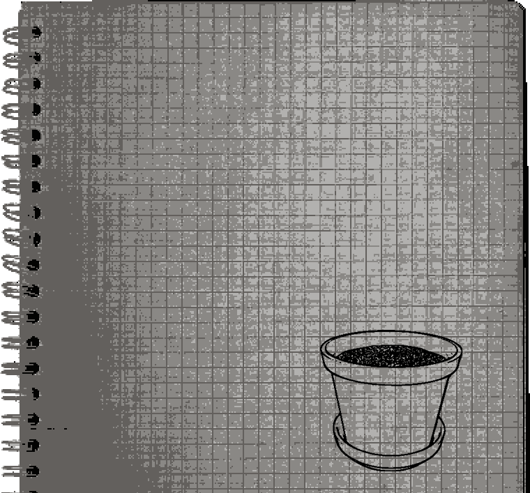

음...아니! 할 생각 없는데?
오늘 하루는 다육이랑만 보낼거야~!
야! 왜 무시해! 거기서!
동물 형상의 폴리곤이 벽에 붙어있다.
잘 만들어진 독수리모양이다....
...이쪽을 보는 것만 같다.
흐흠~ 다육이 다육이~ 귀여워 죽겠어!
오! 너구나.. 오랜만이다...?
아! 다육이한테 햇빛을 좀 쬐어주고 있었어!
우리 다육이가 햇빛을 쬔지 좀 오래 됐거든.
오동통한 다육이가 있다.
누가 방금 뿌렸는지 전체적으로 물기가 촉촉하다.
오동통한 잎이다. 왼쪽의 다육이에서 떨어진 모양이다.
▶여기서 뭐해?
▶과제는 했어?
#1 다육맘?
혜윤이가 다육이를 들고
햇빛을 쬐어주고 있다고 한다.
과제는 신경도 안쓸 정도로
지금 신경이 완전히 다육이에게
쏠려 있는 듯 하다.


